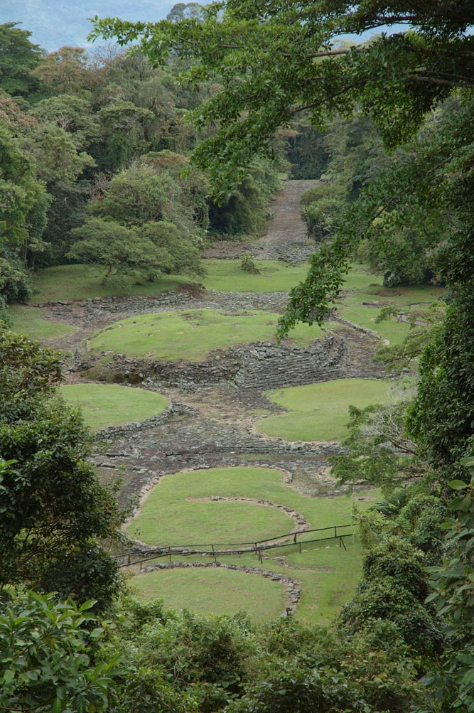
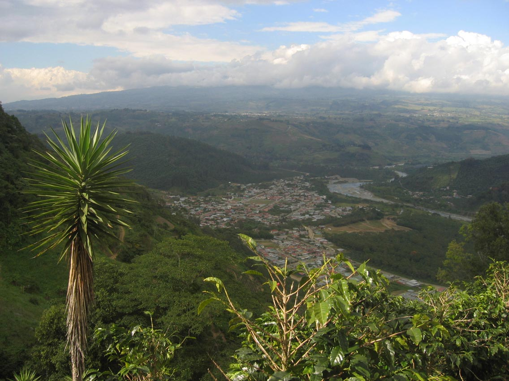
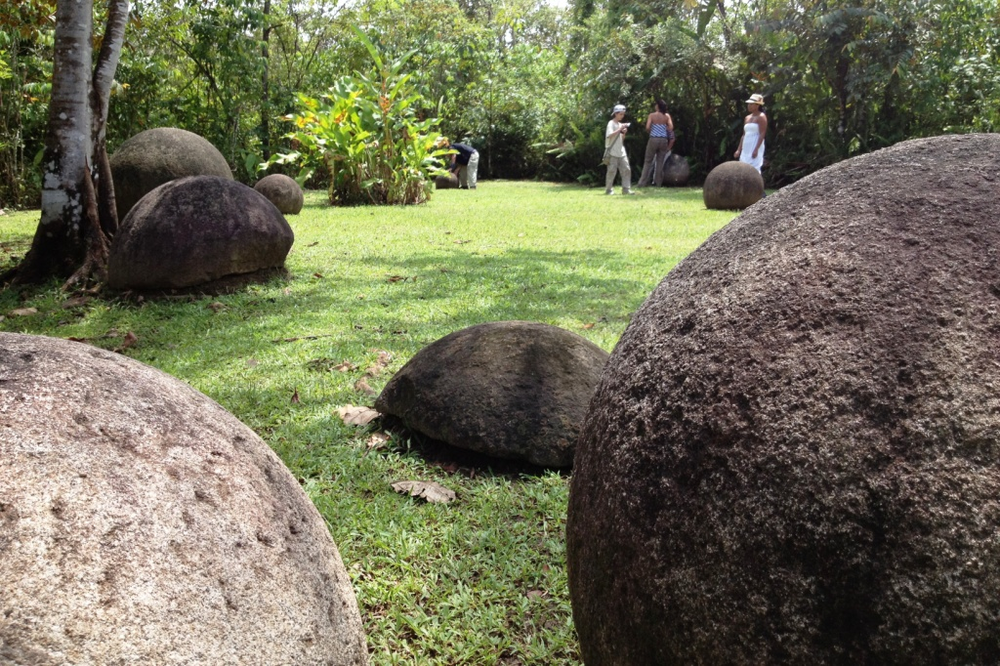

Descubre la
Historia de
Costa Rica
Viaja en el tiempo con experiencias AR en sitios históricos costarricenses.
Destacados

Monumento Guayabo
Turrialba, Cartago

Teatro Nacional
San José Centro

Basílica de los Ángeles
Cartago
Cerca de ti

Iglesia Colonial de Orosí
Valle de Orosí · 28 km

Museo Nacional
San José · 0.8 km
¿Cómo Funciona?
Elige un sitio histórico
Apunta tu cámara
Vive la historia en AR
Sitios Históricos
6 lugares de Costa Rica para explorar
Historia


Artefacto detectado a 1.2m
Esfera de Piedra del Diquís
Réplica digital precolombina (500-1500 d.C.). Patrimonio UNESCO 2014.
Galería Multimedia
Explora y registra los puntos de interés
Registrar foto
Captura el punto de interés actual para desbloquear la comparación mágica del antes y el ahora.
Comparación Antes vs Ahora
Desliza para comparar tu foto con el pasado
Monumento Nacional Guayabo
Teatro Nacional
Basílica de los Ángeles
Fotografías Recientes
Sobre esta función
Nuestra tecnología superpone fotografías históricas sobre la vista actual tras registrar el entorno.
Sobre el Proyecto
Conoce más sobre EchoHistory
EchoHistory
Costa Rica · AR
Nuestra Misión
EchoHistory busca transformar el turismo cultural en Costa Rica usando Realidad Aumentada para dar vida al patrimonio. Nuestro objetivo es que cada visitante pueda ver, sentir y comprender el pasado precolombino y colonial costarricense.
Objetivos
Democratizar el acceso al patrimonio histórico costarricense desde cualquier dispositivo móvil.
Crear experiencias educativas inmersivas que complementen el turismo tradicional.
Preservar digitalmente el legado — desde las esferas del Diquís hasta la arquitectura colonial.
Tecnología
Proyecto Académico
Proyecto en desarrollo para la
Universidad Hispanoamericana (UH)
Desarrollado por:
Daniel Vindas Barquero
Kenneth Rojas Salazar
EchoHistory v1.0.0 · Prototipo
© 2026 EchoHistory · Daniel Vindas & Kenneth Rojas · UH
Contacto
Comunícate con nosotros